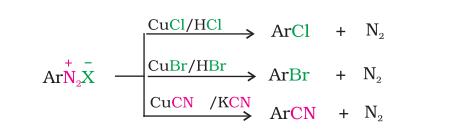
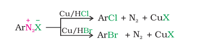
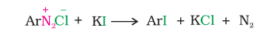
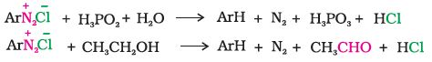
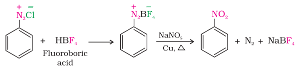
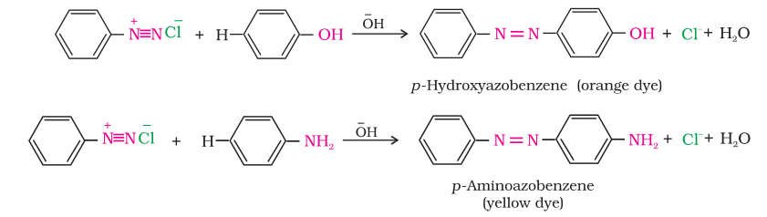

Chemical Reactions
The reactions of diazonium salts can be broadly divided into two categories, namely (A) reactions involving displacement of nitrogen and (B) reactions involving retention of diazo group.
A. Reactions involving displacement of nitrogen Diazonium group being a very good leaving group, is substituted by other groups such as Cl–, Br– , I– , CN– and OH– which displace nitrogen from the aromatic ring. The nitrogen formed escapes from the reaction mixture as a gas. 1. Replacement by halide or cyanide ion: The Cl–, Br– and CN– nucleophiles can easily be introduced in the benzene ring in the presence of Cu(I) ion. This reaction is called Sandmeyer reaction.

Alternatively, chlorine or bromine can also be introduced in the benzene ring by treating the diazonium salt solution with corresponding halogen acid in the presence of copper powder. This is referred as Gatterman reaction.

The yield in Sandmeyer reaction is found to be better than Gattermann reaction.
2. Replacement by iodide ion: Iodine is not easily introduced into the benzene ring directly, but, when the diazonium salt solution is treated with potassium iodide, iodobenzene is formed.

3. Replacement by fluoride ion: When arenediazonium chloride is treated with fluoroboric acid, arene diazonium fluoroborate is precipitated which on heating decomposes to yield aryl fluoride.
4. Replacement by H: Certain mild reducing agents like hypophosphorous acid (phosphinic acid) or ethanol reduce diazonium salts to arenes and themselves get oxidised to phosphorous acid and ethanal, respectively.

5. Replacement by hydroxyl group: If the temperature of the diazonium salt solution is allowed to rise upto 283 K, the salt gets hydrolysed to phenol.
6. Replacement by –NO2 group: When diazonium fluoroborate is heated with aqueous sodium nitrite solution in the presence of copper, the diazonium group is replaced by –NO2 group.

B. Reactions involving retention of diazo group coupling reactions The azo products obtained have an extended conjugate system having both the aromatic rings joined through the –N=N– bond. These compounds are often coloured and are used as dyes. Benzene diazonium chloride reacts with phenol in which the phenol molecule at its para position is coupled with the diazonium salt to form p-hydroxyazobenzene. This type of reaction is known as coupling reaction. Similarly the reaction of diazonium salt with aniline yields p-aminoazobenzene. This is an example of electrophilic substitution reaction.
